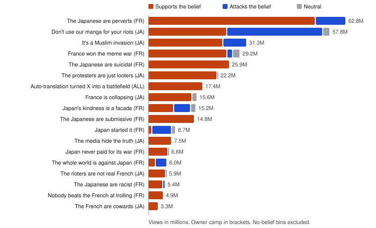

Studies of online virality usually count content: posts, hashtags, formats. A meme war shows the limit of this approach. The same belief can travel as a joke, a statistic, a testimony or an insult, and a debunk spreads the belief it attacks. Counting formats hides what each side believed and which beliefs won attention.
We propose a simple unit of analysis for attention conflicts: the belief, a claim a person could state as "I believe that ...", independent of the packaging that carries it. Each post is tagged with one belief and a stance toward it. Reach is then measured per belief and per stance, and replies that quote another post are scored as duels.
We apply this to the clash between French-speaking and Japanese-speaking accounts on X that followed the October 17, 2026 protests in France. The case is useful because it mixes humor, national stereotypes, immigration discourse and a factual correction, all within ten days, with X's automatic translation putting each side's posts in front of the other.
On October 17, 2026, between 550,000 (Interior Ministry) and 800,000 (organizers) people marched across France for education funding and purchasing power [1, 2]. The evening ended in looting in Paris, Lyon, Marseille and other cities [2]. From October 18, images of rioters in anime cosplay and with the One Piece pirate flag circulated on X, and Japanese-speaking accounts asked the French not to involve Japanese culture. French-speaking accounts answered with jokes about Japan, and the exchange grew over the following week. On October 22, a note from the French Justice Ministry reported that, of 186 people jailed between October 18 and 21, 70% were French nationals, nearly all of them born in France, 68% were aged 25 or under and 95% were men [3]. In Japan, the debate ran alongside domestic discussion of immigration: permanent residency guidelines were revised on October 1, 2026 [4], and the Sanseito party, which campaigns on "Japanese First", had won 14 seats in the July 2025 upper house election [5]. Press coverage in late October described the clash without measuring it [5, 6].
The corpus combines three sources: (a) 59 seed posts, every tracked post above 500,000 views plus posts found by hand; (b) 146 posts from manual searches by language at view thresholds of 500,000, 250,000 and 100,000; (c) 115 quote posts read in the Quotes tab of the 15 most viewed posts, sorted by views. Posts quoted by seeds were added through the X API. After relevance vetting, the corpus holds 327 posts with 356.5 million views. Most posts date from October 18 to 26, 2026; a few quoted posts are older (earliest October 6). Post metadata came from the X API v2 (post lookup and counts), at a total API cost under 5 USD; quote pages were read in a logged-in browser.
Daily post volume confirms the event: on the final search queries, French-language volume was 3.4 to 6.5 times its September baseline (1,734 posts per day) from October 20 to 25, and Japanese-language volume 4.8 to 9.3 times its baseline (1,565 posts per day) from October 20 to 26.
Each post was read with its image or video, because the meaning of a meme often lives in the image [7]. A contact sheet of all thumbnails was inspected. Each post received: an idea sentence paraphrasing its claim in neutral English, including the implied meaning of a joke; a belief; a stance; a side (the camp the post serves: FR, JA or NEU); a community (the language the author writes in: FR, JA, EN, AR, ES, TH, PT, CN); a register; and, for quotes, a relation to the quoted post (rebut, amplify, verdict, restate). Side and community describe language and position, never nationality, ethnicity or religion. A first pass was made with an AI assistant (Claude), then corrected while reading the posts.
A first round induced 23 concepts from the posts, following concept induction [8, 9]. Many of these were named after their dominant packaging ("suicide jokes", "the spectators' verdict"), which mixed what was said with how it was said. We then renamed every concept as a belief and required each label to pass four tests: (1) someone can say "I believe that ..."; (2) a joke, a serious post and a debunk can all be about it; (3) one post can support it and another attack it; (4) the label contains no format word. This produced 18 beliefs plus two bins for posts with no belief (bewildered questions about the fight, and bare racial insults), kept off the comparison.
Each belief has an owner camp, the side whose voice it serves. By default, a post from the owner camp supports the belief, a post from the other camp attacks it, and a neutral post is neutral. Posts where this default is wrong were overridden by hand (for example, Japanese-speaking critics of the manga plea, or posts sharing the arrest data, which attack the invasion belief).
Reach of a belief is the sum of views of its posts, split by stance. A duel occurs when post B quotes post A; B wins if it has more views than A. Inner duels oppose supporters and attackers of the same belief. Duels across beliefs feed an Elo rating (K = 32, start 1500, chronological order) [10]. The third-party share is the share of views from communities other than FR and JA.
Idea sentences were embedded with all-mpnet-base-v2 [11]; belief centroids were placed in two dimensions by metric multidimensional scaling of cosine distances, as in LDAvis [12]. To test whether the beliefs could be recovered automatically, we clustered posts with Ward linkage and compared the clusters with the hand labels using the adjusted Rand index (ARI) [13]: 0.10 on raw multilingual post text and 0.19 on the annotated idea sentences.
Posts serving the French side drew 193.1M views, the Japanese side 125.5M and neutral posts 37.8M. By language community, French-speaking authors drew 144.7M views, Japanese-speaking 130.5M, English-speaking 57.4M and Arabic-speaking 18.3M; third parties together drew 22.8%. Figure 1 shows reach by belief and stance.

Four beliefs owned by the Japanese side concern immigration or media distrust: "It's a Muslim invasion" (23.8M supporting views), "France is collapsing" (13.9M), "The media hide the truth" (7.5M) and "The rioters are not real French" (5.6M). Together they took 50.8M of 125.5M Japanese-side views (40%). "It's a Muslim invasion" also has the highest Elo of all beliefs (1591; 8 wins, 1 loss across beliefs). Its supporting posts were carried about equally by humor (11.9M) and argument (11.6M).
On October 23, Hiroyuki Nishimura, founder of the 2channel forum, posted the Justice Ministry figures in Japanese (2.73M views). Five quote posts answered it in support of the invasion belief; each reached fewer people than his post (5 wins, 0 losses). Overall, inner duels on this belief went 5 to 2 in favor of attackers. Yet posts supporting the belief totaled 23.8M views, 8.7 times the correction. Winning every direct exchange did not translate into reach, consistent with evidence that false news spreads further and faster than true news on Twitter [14].
The largest French-side beliefs were "The Japanese are perverts" (53.1M supporting views), "The Japanese are suicidal" (25.9M) and "The Japanese are submissive" (14.8M): 93.8M of 193.1M French-side views (49%). Posts accusing Japan of racism ("The Japanese are racist") drew 4.7M French-side views (2%).
"Don't use our manga for your riots" drew 25.0M supporting views, all on the Japanese side. Posts attacking it drew 30.5M, mostly French mockery, and won 11 of 12 inner duels. Japanese-speaking critics of the plea added 1.45M views.
| Register | Posts | Share of posts | Share of views |
|---|---|---|---|
| Humor | 127 | 39% | 54% |
| Argument | 119 | 36% | 27% |
| Meta (about the fight itself) | 30 | 9% | 5% |
| Insult | 28 | 9% | 7% |
| Testimony | 13 | 4% | 6% |
| Information | 10 | 3% | 2% |
A further 17.4M views went to posts about X's automatic translation itself ("Auto-translation turned X into a battlefield"), a belief shared by all sides. Translation made each camp's posts readable to the other and gave spectators a running joke.
Three observations follow. First, the belief, not the joke, is the useful unit: the same invasion belief traveled as memes and as arguments in nearly equal measure, and a meme count would have split it in two. Second, stance matters for reach accounting: the manga belief is the second largest by views, but more than half of those views attack it. Third, duels and reach measure different things. A correction can win every head-to-head exchange and still lose the audience, because supporters of a belief do not need to answer the correction to out-reach it.
The corpus is built from the most viewed posts and from hand-chosen searches; it is not a random sample, and the French side is over-represented among the largest seeds. Views measure reach, not agreement or belief adoption. Annotation was done by one author with AI assistance; this version reports no inter-annotator agreement, and a second-reader audit of a random 10% sample is planned for the next version. Quote counts and order in the browser change over time, and deleted or protected posts are missing. Owner camps and default stances are a modeling choice; overrides are listed in the released code.
No post text is reproduced. Ideas are paraphrased in neutral language. Posts labeled as insults are counted but never linked. Sides are languages and positions, never ethnicity or religion. The only person named is a public figure, for a public post. The belief map, per-post annotations without post text, and code are public: map at lkorczowski.github.io/france-vs-japan-X-trend/ideas.html, repository at github.com/lkorczowski/france-vs-japan-X-trend, method for AI assistants at github.com/lkorczowski/content-strategist-AI-cookbook.
Competing interests. The author runs STATUR, a viral marketing lab. The study was not commissioned.